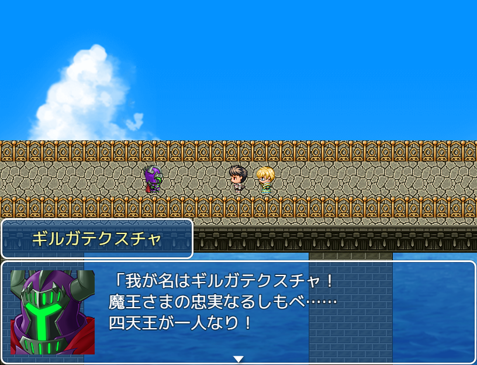

No.34 勇者の烙印(体験版) |
|
 |
|
| 作者：きぎぬ | |
| ツクール：RPGツクールMV | |
| ジャンル：RPG | |
| 配信/投稿：一切自由 | |
| 作者コメント： 作者による効率プレイで1時間程度のボリュームの、オーソドックスなRPG(体験版)です。 完成版へセーブデータを引き継げるかどうかは分かりません。 まあせっかくのツクールMV製ゲームなので、試しに触ってみてくれると嬉しいです。 バグは…(多分)ありまぁす！ 従来のF12がF5へと変わってる点はご注意ください。 あとツクールMV自体の不具合で、PCに積んでるメモリが少ないとクラッシュしやすいそうです。 こまめなセーブを心がけるといいと思います。 |
|
| 管理人コメント： さあ、新たな時代の幕開けだ！ |
|
| ダウンロード(129MB) / 感想掲示板 | |
| 前の作品 / 次の作品 / TOPへ戻る | |